Case brief
The complete case, organised for learning, practice, and revision.
The scenario
From the original Introduction
Overview
A company wants its employees to ask internal questions about policies, runbooks and product docs, and get an answer that cites its sources. The hard part is permissions. A Tier-1 support agent and a VP can ask the same question and must get different answers, because each may read only what their access allows.
- The design is a permission-aware retrieval pipeline. It identifies the user, retrieves only the documents that user may open, writes the answer from those documents with citations, and abstains when the evidence is thin.
- It also has to act on lost access: when someone leaves a group, the change must reach the search index and the answer cache, not only the source system.
This is the anchor case for enterprise RAG (retrieval-augmented generation). Support assistants, legal search and low-latency enterprise search reuse the same core and change which constraint dominates.
From the original Interview Guide
Knowledge work is people looking up how the company runs: policies, runbooks, product docs. An intern and a VP can ask the same question and get different answers.
This case covers one slice: ask an internal question and get a cited answer you are allowed to see. It is neither a general Google nor a ticket bot.
End to end, as Priya (Tier-1 support):
- She asks “What’s the SLA (service level agreement) for enterprise plus?”
- We check who she is: tenant, role, groups.
- We retrieve only docs she may open. The VP handbook never enters the model.
- The model writes from that pack and cites the passages.
- If sources disagree or evidence is thin, we say so, or abstain, or escalate.
- If she is later moved off that group, yesterday’s cached hit is dead.
Who you are → what you may read → cited answer or stop. Building a new policy is out of scope.
Core idea: This is a permission-aware RAG (retrieval-augmented generation) problem first and a vector-search problem second. Different employees can ask the same question and legitimately need different answers.
The core idea
From the original Introduction
The core idea
Every request takes the same path, and authorisation comes before retrieval, never after it.


Who this case is for
From the original Introduction
Who it is for
Engineers preparing for Forward Deployed, solutions or applied-AI engineering interviews, especially a round that asks you to design a RAG system or a knowledge assistant.
From the original Introduction
Objectives
After this case you can:
- explain the system end to end at interview depth, starting from its dangerous constraint: the model must never see a document the user may not open;
- answer follow-up questions on ingestion, authorisation, retrieval, caching, evaluation, failure modes and rollout.
From the original Introduction
What it assumes
Comfort with retrieval (keyword search, embeddings and reranking), LLM (large language model) agents and basic cloud architecture. The related reviews at the foot of each section cover each one.
The permission boundary
Change the identity to see how the evidence changes. This is an illustrative access model, not a live permission check.
“What is the SLA for Enterprise Plus?”
- Published SLA policyAllowed
- Support runbookAllowed
- VP escalation handbookExcluded
Only the published policy and support runbook enter Priya’s evidence set.
Choose where to start
Original reading notes
These notes describe the source page’s original reading tracks. In this prototype, use the five sections above; their content has been redistributed below.
From the original Introduction
How to use it
- Read the three mandatory sections in order: Interview Guide, Technical Deep Dive, Quick Review.
- Mark each part as read when you finish it. The case counts as done in your progress when every part is read.
- Open the Full Design when you need a worked number, a source or the reasoning behind a step.
- Come back to the Quick Review the night before the interview.
From the original Introduction
The sections
| Section | What it is for | Interview prep |
|---|---|---|
| Interview Guide (2 parts) | The answer you would talk through in the interview, from the opening framing to the 60-minute delivery plan. Start here: it stands on its own. | Mandatory |
| Technical Deep Dive | The detail behind each component, from ACL normalisation and the two authorisation layers to cache safety, cost and the failure playbook. Read it after the Interview Guide, to answer follow-up questions. | Mandatory |
| Quick Review | The whole case on one page: the architecture, five rules, scale numbers and interview triggers, for recall before the interview. | Mandatory |
| Full Design (5 parts) | The complete, referenced write-up the other sections were drawn from: sizing, rollout, the release gate, the cost pivot, incident drills and the sources. | Optional |
Next: build the answer in interview order.
Start the walkthroughDesign walkthrough
The complete interview reasoning, with worked Full Design chapters inside the relevant steps.
1. Frame the problem
From the original Interview Guide
0. The mental model
User
↓
Identity
↓
Authorisation
↓
Query understanding
↓
Permission-aware retrieval
↓
Rerank
↓
Evidence selection
↓
LLM
↓
Citation / policy verification
↓
Answer / Abstain / Escalate
The LLM is never the authorisation system. If the user cannot see a document, that document must not enter the model context.
From the original Interview Guide
1. How I would open
“Anyone can build multi-source RAG. The difficult part is that a Tier-1 agent, a Tier-3 engineer and an account manager may ask the same question but should see different information. So I’ll treat permission fidelity as the primary constraint and optimise retrieval quality inside that boundary.”
Questions to ask the interviewer
Ask the questions that change a design decision. The Full Design, section 1 expands these into the full discovery table.
| Question to ask | What it's really asking | What you then decide |
|---|---|---|
| Which source is authoritative for each content type, and what if sources disagree? | If Confluence says one SLA and the handbook PDF says another, which one do we quote? | Source ranking, how conflicts are shown, and whether to flag uncertainty. |
| Must inherited permissions and group changes be checked live, or is bounded sync lag acceptable? | If someone just left a group, can they still get last week's docs in the answer? | Live auth vs a named stale window. |
| How fast must updates, deletions, and access revocations take effect? | If a doc is deleted or access is revoked, how long can it still appear in an answer? | Freshness SLO, tombstones, and how often you reconcile. |
| Should answers synthesise across sources, and do citations need a passage or whole document? | Can we blend three docs into one answer, and must the citation be the exact paragraph? | Evidence mix, context budget, and citation grain. |
| What should happen when evidence is weak, retrieval fails, or sources conflict? | If we only have a maybe, do we still answer, or say we don't know? | Answer, mark stale, abstain, or escalate. |
| Who asks questions, who investigates wrong answers, and who owns an over-sharing incident? | When an intern sees a salary doc they shouldn't, who gets paged, and who may open the traces? | Personas, incident owner, and who can inspect traces. |
| What are p95 latency, scale, residency, retention, and cost limits? | How fast, how many users, which country the data must stay in, and what we can spend? | Latency budget, partitioning, region, and how long logs are kept. |
| Who may inspect traces, and what must an audit reconstruct? | After a leak scare, can we prove which docs went into the model and who was allowed to see them? | Logged IDs, versions, policy, evidence, and citation set. |
If answers are unavailable, state the assumptions before drawing: read-only, query-time permission checks, passage citations, and fail-closed behaviour on uncertain access.
Default MVP (minimum viable product): read-only Q&A Drive, SharePoint, Slack, wiki and tickets; multi-tenant; ABAC/ACL-aware; query-time authorisation; passage citations; sub-3-second chat target; no write-back, personal files, unapproved web, cross-tenant search or persistent memory.
Worked detail: Name Permission Fidelity as the Constraint Before Drawing Anything
From the original Full Design
1. Name Permission Fidelity as the Constraint Before Drawing Anything
Open with the outcome and the risk before any architecture. An assistant that answers well but leaks is worse than no assistant, so permission fidelity is the load-bearing constraint and retrieval quality is the second problem. Say it in the first two minutes: the interviewer uses your opening to decide where the hour goes.
"Anyone can build multi-source RAG. The thing that makes this hard is that a Tier-1 agent, a Tier-3 engineer and an account manager must get different correct answers to the same question, so access control isn't a feature I add at the end, it decides the shape of the retrieval path. I'll design around that."
For a less technical room, use the technology-agnostic version from the tutorial:
- We need an internal knowledge assistant for employees across departments.
- The assistant should answer questions using approved content from Drive, SharePoint, Slack, wikis, and support tickets, but only from material the requesting user is allowed to see.
- The success metric is grounded answers with citations, low hallucination risk, and freshness that matches source updates.
- I'd start by clarifying authority sources, permission inheritance, freshness expectations, and what the business wants to happen when the system is unsure or the sources conflict.
| Answer | What it does | What it misses |
|---|---|---|
| Weak | Sources → vector DB → LLM on top-k | Permissions, deletions, citations, diagnosis |
| Average | Adds hybrid search, rerank, citations, a permission filter | Before vs after retrieval; fail-open vs fail-closed |
| Strong | ACL + version + tombstone at ingest; filter before the model; rerank; verify citations; abstain; query-time ACL, precompute only if stable | Proved with a leak suite, groundedness, and a deletion drill |
Ask the questions that change a component. Write the answers where they stay visible.
| Question to ask | What the answer decides |
|---|---|
| Which source is authoritative for each content type, and what happens when Drive, SharePoint, Slack, the wiki and tickets disagree? | Conflict policy: prefer approved current sources, surface the conflict, never silently pick one |
| Must permissions be inherited live, or is periodic sync acceptable? | Where ACL checks live. Live means query-time enforcement; periodic means a bounded, stated stale window |
| Synthesise across sources, or answer only from retrieved passages? Citations to the passage or the document? | Context-budget design and the citation builder's granularity |
| How fresh must policies, tickets and project updates be, and how fast must a deletion or revoked permission leave retrieval? | Freshness SLO per content class; event-plus-backfill ingestion; reconciliation cadence |
| Who is the primary user, who diagnoses a wrong answer, who owns the risk if it over-shares? | The trace store's audience and the escalation path |
| p95 latency target, residency, retention, cost limits? | Stage-by-stage latency budget; region pinning; what the trace may store |
| Who may view audit logs and answer traces, and what must they contain to reconstruct an answer? | Trace schema: source event IDs, index and ACL version stamps, request ID, exact citation set |
| Fallback when retrieval fails or sources conflict: refuse, label staleness, or escalate? | The output policy engine's three modes |
Each stakeholder notices a different failure first. Optimise only for the employee and security cannot defend it; optimise only for control and nobody uses it.
| User | Workflow | Failure they notice first | What the assistant gives them | Approval needed |
|---|---|---|---|---|
| End user (employee) | Asks a work question in chat, expects a cited answer and a next step | Wrong or missing answer | Grounded answer with passage citations, abstention on weak evidence, a "missing source" button | None for read-only Q&A any write-back is out of MVP scope |
| Operator / support | Triages "the assistant was wrong" reports, tunes connectors and retrieval | No trace of why the system failed | Replayable structured traces, a freshness dashboard per source, the reconciliation drill | Decides when to widen sources after gates pass |
| Security owner | Approves sources, reviews leakage results, reads audit logs | An answer exposes content the user should not see | Leakage suite as a release gate, the ACL normaliser, immutable audit of retrieval set and citations | Any exposure blocks release; signs off each new source |
| Executive sponsor | Tracks adoption and cost-to-value | A tool that looks impressive but does not reduce work | Grounded-answer rate, task completion, cost per answer, source-by-source expansion | Approves rollout stages and budget |
Support persona (same architecture): agent asks a customer/problem question → cited answer from policy, product docs, past tickets → next step, optional draft ticket note. Reads run automatically. Any write-back is previewed and human-approved. Extra sources: Zendesk, Salesforce Service Cloud, Jira.
Scope before the first box: read-only Q&A, five source systems (Drive, SharePoint, Slack, wikis, tickets), ABAC (attribute-based access control), multi-tenant, sub-3 s. Writes and streaming ingest are out. If they give no assumptions, state yours: permissions at query time; citations point at the passage, not the title.
2. Set requirements and exclusions
From the original Interview Guide
2. Requirements: Functional + Non-Functional
Frame requirements like this:
Functional = what the system does. Non-functional = how well it does it and what constraints it must satisfy.
Functional requirements: what the system must do
- Ingest enterprise sources. Drive, SharePoint, Slack, Confluence/wiki, Jira/tickets, etc.
- Normalise permissions. Convert source-specific ACLs/groups into a common authorisation model.
- Retrieve authorised content. Unauthorised chunks must never enter model context.
- Answer questions. Use retrieved evidence, not unsupported model knowledge.
- Provide citations. Citations point to the actual supporting, authorised evidence.
- Abstain when necessary. If evidence is weak or unavailable, do not guess.
- Handle changes. Propagate document updates, deletions, ACL (access control list) changes and revocations.
- Support different personas/tenants. The same query can legitimately produce different results.
- Audit decisions. Keep enough information to explain why an answer was produced.
Non-functional requirements: how well / under what constraints
| Requirement | Example target / constraint |
|---|---|
| Security | Zero unauthorised disclosure; fail closed on authorisation failure |
| Latency | Chat target around p95 <3s; tighter targets need caching/precomputation |
| Freshness | ACL changes/deletions reflected within a defined SLO |
| Scalability | Example: 100k employees, 50M chunks, 100 QPS peak |
| Availability | Degrade safely when retrieval/reranking/LLM components fail |
| Cost | Define a cost/request budget and control model + retrieval spend |
| Auditability | Replay why an answer and authorisation decision occurred |
| Reliability | Idempotent ingestion, retries, backfill and reconciliation |
| Maintainability | Centralised, deterministic authorisation rather than scattered permission logic |
Interview shortcut
If asked “What are the requirements?”, say:
“Functionally, I need to ingest enterprise data, understand permissions, retrieve only authorised evidence, and generate a cited answer or abstain. Non-functionally, the big constraints are zero data leakage, permission freshness, latency, scalability, cost, and auditability.”
Worked detail: State Requirements as Testable Constraints
From the original Full Design
2. State Requirements as Testable Constraints
A requirement that cannot fail a test is a preference. "Make it fast" is a preference; "p95 under 3 s" is a constraint. Split with MoSCoW: Must is the launch gate. If the interviewer forces a tradeoff, protect Must first.
| Priority | Functional requirement | Accepted when |
|---|---|---|
| Must | Incremental ingest of Drive, SharePoint, Slack, wikis, tickets | A source change never requires a full reindex |
| Must | Preserve versions and ACL metadata | Retrieval can answer "what was visible to this user at this time?" |
| Must | Resolve effective permissions at query time; filter before the model | Unauthorised chunks never enter the context window |
| Must | Grounded answers with passage-level citations | Every citation is in the permitted retrieval set |
| Must | Abstain on weak evidence | A correct refusal beats a confident hallucination |
| Should | Hybrid retrieval and reranking | Policy IDs, error codes and ticket numbers match lexically |
| Should | Show confidence, missing evidence and escalation reason | Uncertain or high-risk answers are labelled, not guessed |
| Should | Safe feedback for evaluation | No raw-prompt dump; no training on customer data without governance |
| Should | Admin controls: sources, freshness, policy, blocked actions, audit export | An operator can change those without a code release |
| Could | Richer analytics, more sources, tenant ranking, OCR, human-review workflows | Out of MVP; must not distort the first architecture |
Won't (MVP): write-back to tickets or docs; personal files; unapproved web; cross-tenant search; memory beyond a session. A later write tool is allowlisted, previewed, idempotent and human-approved.
Non-functional (operating constraints):
| Constraint | Testable form |
|---|---|
| Latency | p95, never "fast enough". In this design, target p95 of 3–8 s; under 3 s if it must feel like chat; longer work goes async. Slice identity → ACL → retrieval → rerank → generate; each stage times out and degrades, never fails open |
| Availability | Connector, index or model down: partial coverage, labelled staleness, or refuse; never a silent guess |
| Cost | Embedding, index and tokens estimated separately. Cost per answer. Cache stable docs; prune retrieval; small models for classification; expensive reasoning only where risk justifies it |
| Security | SSO via the IdP; ABAC over source ACLs; filter before the model; revocations fan out to indexes and caches; secrets never in prompts; no training on customer data unless the contract allows it |
| Audit | Immutable: source event IDs, index/ACL versions, request ID, retrieved docs, policy decision, model/prompt version, exact citation set shown |
| Reliability | Fail closed on permissions, stale permission data and the citation check. Label stale content, including a suspected missed deletion, and suppress it once the deletion is confirmed. Degrade on retrieval quality. Queue background reindex |
Every Must has an owner:
| Requirement | Component |
|---|---|
| Incremental ingest | Connectors, change-event processor, ingestion queue with backfill |
| Version and ACL preservation | Metadata store, ACL normaliser, permission-aware index, audit log |
| Hybrid retrieval and reranking | Keyword index, vector index, fusion, reranker |
| Grounded answers with citations | LLM gateway, evidence selector, citation builder and verifier |
| No cross-user disclosure | Identity mapping, authorisation filter, policy enforcement point, output policy |
| p95 latency | Query service, caches, rerank budget, model timeout |
| Deletion freshness SLO | Connector sync, tombstones, reconciliation job, reindex |
| Graceful degradation | Circuit breakers, fallbacks, partial-answer policy |
3. Size the workload
From the original Interview Guide
15. Scale and latency
Use round numbers as reasoning examples.
| Number | What it forces |
|---|---|
| 100k employees | ACL/identity cardinality |
| 50M chunks | Refresh/deletion problem |
| 20 QPS | Average load |
| 100 QPS | Peak serving pressure |
| <3 s | Chat-grade target in this design |
| <8 s | Relaxed interactive target in this design |
| ~100 ms | Generation cannot stay on the hot path |
At 100 QPS and ~3 seconds of generation, roughly 300 generations are in flight at once, which makes this a serving problem.
Budget latency across:
identity/auth → retrieval → rerank → generation → verification
Use permission-aware caching, bounded top-k, selective reranking, model routing, async ingestion and circuit breakers.
Timeouts must degrade safely; they must never fail open.
Worked detail: Size on Peak QPS and Permission Refresh
From the original Full Design
3. Size on Peak QPS and Permission Refresh
These are round numbers, not a capacity plan. Each one rules out a naive design.
| Quantity | Figure | What it forces |
|---|---|---|
| Employees | 100k | Identity and ACL cardinality, not 100k concurrent. Post-filter does not scale when almost every query has a different permission set |
| Corpus | 50M chunks | The first embed job is doable. Refresh is the hard part: a permission change or deletion must update indexes and caches without a 50M rebuild |
| Average load | 20 QPS | Untuned sync retrieve → rerank → generate looks fine |
| Peak load | 100 QPS | 5× the work on the same path. Rerank and generate dominate. They queue, p95 blows the 3 s budget, or you drop |
Say these five in the room:
- Size on peak QPS and refresh, not "we indexed once."
- Slice the latency budget: identity/ACL (cheap) vs retrieve vs rerank vs generate (expensive). Timeouts degrade; they never fail open.
- Cache by tenant + permission signature + index version, so repeats skip rerank and generate.
- Pre-filter inside search. Never retrieve forbidden chunks and throw them away.
- Ingestion is async; query is sync. Event + backfill + reconciliation is how 50M stays permission-correct.
Rough check: 100 QPS × 3 s generate ≈ 300 in-flight generations, a serving problem that 20 QPS hides.
4. Draw the architecture
From the original Interview Guide
3. Architecture
Think in two planes.
Control plane
Identity mapping, ACL/ABAC policy, source configuration, retrieval configuration, model routing, evaluation, audit policy and admin controls.
Data plane
Ingestion, normalisation, indexing, query authorisation, retrieval, reranking, evidence selection, generation, citation verification and response/escalation.
Architecture diagram
This is the interview-size version of the Full Design architecture, section 5.


Step-by-step architecture
- Step 1. Ingest sources. Source events and backfills bring enterprise documents into an asynchronous pipeline.
- Step 2. Normalise permissions. Convert content and source ACLs into a consistent form; refuse to index an item if it has no usable ACL.
- Step 3. Build the search indexes. Put eligible content into keyword and vector indexes for hybrid retrieval.
- Step 4. Establish the user's scope. Authenticate the user, resolve groups and attributes, compile the ACL/ABAC permission filter, and plan a multi-hop question only when needed.
- Step 5. Retrieve and check. Run hybrid search with that filter, then apply a live policy post-check before any candidate reaches reranking or the model.
- Step 6. Select evidence. Rerank only authorised candidates and decide whether the evidence is sufficient; abstain or escalate if it is not.
- Step 7. Answer and verify. The LLM gateway generates a cited answer from authorised evidence; citation and output checks run before returning it.
Model and agent role: This is an LLM-powered RAG assistant. A query planner may decompose a multi-hop question, but it does not grant access; deterministic ACL/ABAC checks decide what the LLM may see. The LLM gateway handles generation and model routing after those checks. It is not a free-running write agent.
Trust boundary
Retrieve only what the user may see
↓
final policy check
↓
LLM
Forbidden content must stay outside the model context.
Worked detail: Draw the Architecture End to End
From the original Full Design
5. Draw the Architecture End to End
- One diagram carries the whole design; the two after it zoom in on its halves.
- The design splits into a control plane and a data plane. Policy, configuration, credentials, schedules and evaluation rules live in the control plane.
- Every live question, evidence fetch, enforcement decision and answer lives in the data plane.
- A control-plane change is a release; a data-plane call is a request.
- Version the ABAC (attribute-based access control) policy, ACL mappings, connector schedules, credentials, IdP/SCIM settings, prompts, models, and retrieval policy.
- Release changes to alpha, top-k, reranking gates, evaluation rules, leak tests, and budgets through the control plane.
- Trace every stage. Run the golden set, leak suite, and shadow evaluation; monitor freshness, refusals, cost per answer, and disagreement between the two authorisation layers.
The same flow as a diagram:


Components, in the order they exist and the order they fail:
| Component | Responsibility | Fails how |
|---|---|---|
| Identity and gateway | Authenticate via the IdP, load role, tenant and region, classify the request as read-only or action-taking | Closed: no identity, no answer |
| Connectors and queue | Pull change events, run backfill, reconcile missed events | Degrades: stale source is labelled, not hidden |
| ACL normaliser | Translate each source's permission model into one attribute model | Closed: no usable ACL, nothing indexed |
| Indexes and metadata store | Keyword and vector per tenant; versions, tombstones, event IDs | Degrades: vector down, keyword serves a labelled answer |
| Authorise and pre-filter | Resolve groups, compile attributes into the search filter | Closed |
| Retriever and fusion | Hybrid search inside the filter, RRF | Degrades: fusion order without rerank |
| Policy post-check | Re-run the full ABAC policy on fresh attributes; redact as an obligation | Closed: policy engine down, refuse |
| Reranker and grader | 20 to 6, then decide if the evidence is enough | Degrades or refuses |
| LLM gateway and verifier | One place for prompts, model choice, guardrails; reject any citation outside the permitted set | Closed on citation failure |
| Trace store, eval, dashboards | Replayable runs, golden set, leak suite, freshness and cost signals | Degrades: answer still served, gap logged |
Boundaries: sync/async sits between ingest and query. Trust sits at ENFORCE: text the user cannot see exists only to its left. One owner each: sources own truth, metadata store owns versions and tombstones, indexes own derived search state, trace store owns what happened. Caches are keyed on tenant + permission signature + version and die on a permission change.
5. Defend the key decisions
From the original Interview Guide
4. Ingestion: normalise permissions first
A connector downloads documents and translates each source's permission model into one internal representation.
Keep:
- stable source/document ID
- tenant
- owner
- version
- updated-at
- principals/groups
- classification
- deletion/tombstone state
- ingestion checkpoint
- ACL/index version
Typical source concerns:
| Source | Main risk |
|---|---|
| Drive | Inherited sharing (limited-access folders can block it), personal files, external sharing |
| SharePoint | Broken inheritance, stale site/library permissions |
| Slack | Private channels/DMs, secrets, prompt injection |
| Wiki | Page restrictions, stale policy, malicious content |
| Tickets | Customer visibility, PII, exact ticket/error identifiers |
Rule: no usable ACL means do not silently assume “internal”. Embeddings are derived search state, not the permission authority.
From the original Interview Guide
5. Freshness and deletion
Use:
Source event
→ Queue
→ Fetch authoritative record
→ Normalise content + ACL
→ Index / tombstone
→ Reconciliation
Use change events where possible, idempotent processing, backfill, tombstones and periodic reconciliation.
Authorisation correctness and freshness correctness are different checks.
A connector can miss a delete while the ACL still looks valid. If content freshness is outside the agreed SLO, answer with a staleness label; if permission data is stale, fail closed.
From the original Interview Guide
6. Authorisation: two layers
Layer 1. Pre-filter
Compile the user's identity/attributes into the search filter.
Examples: tenant, groups, clearance, region, project, customer/account, classification.
This improves retrieval quality and latency because forbidden documents never compete for top-k.
Layer 2. Authoritative post-check
Before generation, verify the final evidence set again.
This catches:
- live revocation
- stale ACLs
- time-based embargoes
- need-to-know rules
- redaction obligations
- changes between retrieval and generation
Why not only post-filter?
If top-10 contains six forbidden documents, filtering afterward leaves only four useful candidates. The user may miss relevant authorised evidence.
Pre-filter for efficiency and recall. Post-check for correctness.
From the original Interview Guide
7. ABAC
ACL (access control list) asks “can this principal access this document?”
ABAC (attribute-based access control) can combine:
- user tenant
- groups
- department
- clearance
- region
- document classification
- customer/account
- time window
Authorisation stays deterministic. Never ask the LLM (large language model) to decide whether a user is allowed to see something.
From the original Interview Guide
8. Retrieval
Use hybrid retrieval.
Dense search: semantic similarity and paraphrases.
BM25/lexical search: ticket IDs, error codes, policy IDs, product names and exact identifiers.
RRF (reciprocal rank fusion): combine rank from dense and lexical systems.
Then rerank the authorised candidate pool.
Correct order:
Authorise
→ Retrieve
→ Fuse
→ Enforce policy
→ Rerank
→ Select evidence
→ Generate
Never: retrieve → rerank everything → remove forbidden documents.
From the original Interview Guide
9. Reranking and context
Reranking improves ordering but adds latency/cost.
Use it for ambiguous queries or when quality justifies it. Reduce or skip it for safe cache hits, high-confidence single-source answers and very tight latency targets.
Do not stuff the entire top-k into the prompt.
Use:
- authorised candidates
- rerank
- evidence selection
- compression if needed
- generation
A small, high-quality evidence set usually beats prompt stuffing.
From the original Interview Guide
10. Generation, citations and abstention
The LLM answers from the selected evidence.
Evidence
→ Answer
→ Citation builder
→ Citation verifier
→ Output policy
→ User
Every citation must refer to evidence the user is authorised to see and that supports the claim.
If evidence is insufficient:
Abstain.
Possible outcomes:
- Answer
- Answer with limitation/staleness warning
- Abstain
- Escalate
From the original Interview Guide
11. Prompt injection
Retrieved documents are data, not instructions.
A wiki page can contain malicious text telling the model to ignore its instructions. The model must not turn that into a tool action or security decision.
Use:
- clear instruction/data boundaries
- deterministic authorisation
- tool gateway
- allowlisted tools/actions
- argument validation
- output checks
- human approval for risky writes
Prompting alone does not solve prompt injection.
From the original Interview Guide
17. Safe caching
Never key the cache on the query alone:
query → answer
Use a key containing at least:
tenant
+ permission signature
+ index version
+ query
Consider adding model/prompt version.
Invalidate on ACL changes, deletes, source updates and index/policy changes.
From the original Interview Guide
18. Multi-tenancy
Isolate tenants across:
- identity
- authorisation
- retrieval filters
- cache keys
- storage/index partitioning
- audit
- evaluation
A cross-tenant principal with broad groups must still return zero results for another tenant.
6. Handle failure and pressure
From the original Interview Guide
19. Failure playbook
Retrieval down: partial safe coverage or abstain; never invent.
LLM down: retrieval-only result if useful/safe, otherwise abstain.
Connector down: answer with a staleness label; refuse only when its permission data is stale.
Permission service down: fail closed.
Missed deletion: tombstone + reconciliation + revalidation.
Reranker too slow: smaller candidate set, cheaper reranker or selective reranking.
Embedding model changes: version index, offline eval, staged cutover and rollback.
Long context hurts quality: tighten evidence and compress.
Worked detail: Degrade on Everything Except Authorisation
From the original Full Design
9. Degrade on Everything Except Authorisation
Design the failure path alongside the happy path; a design that only describes success is half an architecture. Authorisation fails closed, and everything else degrades visibly. Say the last row slowly.
| Fails | Behaviour |
|---|---|
| Model provider down | fail over to secondary/smaller model; queue + backoff |
| Vector store down | fall back to keyword search and say the answer is degraded |
| Connector stale | answer with a staleness label; refuse only when permission data is stale |
| Reranker unavailable | fall back to fusion order; trace records it |
| Low retrieval confidence | refuse and escalate to a human |
| Stale ACL cache serves a revoked user | short-lived permission cache with a versioned identity snapshot, revocation on IdP change events, a bounded and stated stale window; layer 2 catches it |
| Fabricated citation | citation verifier against the retrieval set and live authorisation; the response is rejected or rewritten |
| Prompt injection in a ticket or wiki | retrieved content is evidence, never instructions; it cannot alter the system prompt or unlock tools, and unauthorised text never entered the context anyway |
| Policy engine unavailable | fail closed. Refuse. Never fail open on authorisation |
Missed deletion (the failure to rehearse): user authenticates, stale chunk is still indexed, ACL passes (permissions are still valid; this is a freshness failure, not an access one), reranker promotes it, generator is about to answer from a deleted policy. Fix: staleness label, suppress once confirmed, re-read the system of record, reconciliation job replays the delete. The trace shows a prior answer used a now-deleted document.
What breaks at 10×: per-request BM25 over the authorised pool. Replace with a lexical store that has native document security (OpenSearch DLS (document-level security)) or a cached per-group shard. Content-hash cache so only changed text is re-embedded. ACL sync is separate from re-embedding. LLM calls usually dominate latency: cache embeddings and retrieval, semantic-cache answers, parallelise fan-out, stream tokens.
7. Prove the design works
From the original Interview Guide
12. Evaluation
Evaluate separate layers.
Retrieval
- Recall@k
- MRR/NDCG where useful
- exact-match retrieval for IDs/errors
- source coverage
Grounding
- answer supported by evidence
- citation correctness
- citation completeness
Security
- unauthorised retrieval
- unauthorised citation
- cross-tenant leakage
- revoked/deleted document tests
Leakage is a release gate. One exposure blocks release.
Freshness
Test update, deletion, ACL revocation and reconciliation lag.
Operations
Track p50/p95/p99 latency, token usage, cost/request, cache hit rate, escalation rate, connector lag, index freshness and model/version changes.
From the original Interview Guide
13. Persona-based testing
Create a persona × document visibility matrix.
Example personas:
- Tier-1 support
- Tier-3 engineer
- account manager
- security/admin
- external contractor
- cross-tenant user
Run the same questions as each identity.
Change the question from “did we get the right answer?” to:
“Did each persona get the right authorised answer?”
Include negative cases where the correct result is zero accessible documents.
From the original Interview Guide
14. Observability and audit
A replayable trace should capture, subject to privacy policy:
- request ID
- identity/tenant reference
- source event/version
- ACL/index version
- policy decision
- retrieved IDs
- final evidence/citations
- model/version
- prompt/template version
- stage latency
- cost
- output policy decision
The audit system itself needs access control.
Worked detail: Gate the Release on a Leak Count, Not a Score
From the original Full Design
10. Gate the Release on a Leak Count, Not a Score
A retrieval regression is a bug to fix next sprint. A leak is an incident. So a failed security suite blocks the release outright instead of lowering a score. It runs the same question as different personas and asserts that restricted material never appears.
| Metric | Good threshold | Bad threshold | Test dataset | Owner |
|---|---|---|---|---|
| Permission leakage | 0 | > 0, any case triggers rollback review | ACL red-team suite across roles, tenants, regions, stale groups, mid-session changes | Security |
| Grounded answer rate | ≥ 90% supported claims, no sustained drop over 5 pts | > 5 pts below baseline | Silent-mode labelled set plus sampled traffic, SME review | ML / eval |
| Citation precision and recall | ≥ 95% correct citations, ≥ agreed bar | > 5 pts decline | Source-span audit of a sampled set | Evaluation |
| Freshness lag | Within the SLO per content class | Exceeds SLO | Connector telemetry vs index timestamps | Ingestion |
| Retrieval recall | Measured per query type, used to tune α | Regression on any query type | Representative query set segmented by type | ML / eval |
| Escalation quality | ≥ 95% correct escalation on high-risk cases | Missed high-risk case | Risk-labelled scenarios | Product / support |
| Task completion | ≥ 80% of target workflows completed with less manual effort | Below baseline | Workflow replay tests | Product |
| p95 latency and cost per answer | p95 within target at 100 QPS peak; cost per workflow below budget | Breach at peak | Load test plus production telemetry | Platform |
Red-team the boundary directly with five attack families:
- the same question from users with different groups, regions, entitlements and mid-session membership changes
- indirect injection planted in a ticket, wiki page or pasted note
- exfiltration attempts that summarise confidential corpora, coax hidden metadata or extract system prompts and tool schemas
- citation fabrication, where the model cites a document absent from the retrieval set
- staleness attacks, where a deleted or superseded document still ranks well
Eval bug: labels mixed "not allowed" with "wrong document." A permitted contract tripped LEAK. False alarms train people to ignore the next real one. Split forbidden_docs (release gate) from distractor_docs (precision). Assert every forbidden doc is policy-denied.
Trace (not the raw prompt): prompt version, chunk IDs, policy decisions, tool calls, tokens, latency, cost, groundedness. One artefact for the engineer, the auditor, and finance. It already shows whether retrieval missed, permissions over-filtered, the model ignored evidence, or the template changed.
8. Roll out and close
Worked detail: Roll Out One Corpus at a Time
From the original Full Design
11. Roll Out One Corpus at a Time
Week one at a customer covers one connected source, the ACL translation provably right for three personas, a golden set built with their SMEs, and a standing leak test. That proves the risky part, the permission model, before anyone argues about embeddings. Everything else is incremental.
| Week | Gate |
|---|---|
| 0-1 | Name the workflow, the dangerous constraint, success metrics, source owners, approval rules and explicit non-goals |
| 1-2 | One low-risk corpus, no write-back: validate ingestion, ACL normalisation, retrieval and citation formatting offline |
| 2-3 | Golden dataset from historical questions and SME-approved answers; the access-leakage suite across roles, indirect phrasing, stale ACLs and deleted documents. Any exposure blocks release |
| 3-4 | Silent evaluation on real employee questions while users still get the legacy workflow; compare against human answers without showing output |
| 5 | Read-only pilot for one segment with citations, confidence, abstention, feedback capture and an escalation path |
| 6-8 | Expand source by source, each with its own freshness dashboard, reconciliation rules, owner and rollback trigger. Draft-only actions, if any, behind human approval |
| After | Widen only while leakage stays at zero and groundedness, freshness, latency and cost hold; rehearse the reconciliation drill; keep the rollback plan |
The MVP (minimum viable product) is a smaller, sharper promise than "an AI assistant". It includes:
- one or two high-value connectors
- event ingestion plus periodic backfill
- extraction and chunking
- ACL normalisation
- keyword plus vector retrieval
- permission-aware filtering
- a basic reranker
- an LLM (large language model) gateway with citations
- an output policy for abstain and redact
- trace capture with feedback
More sources, multimodal OCR (optical character recognition), tenant-specific ranking, freshness policies by content class, drift regression tests and human review workflows come after the trust path works.
Close on the trade-offs and what would change them.
| Decision | Chose | Would revisit if |
|---|---|---|
| Pre-filter over post-filter | pre-filter + tenant partitioning | ACLs so dynamic the index cannot keep up, then a per-request authorisation service |
| LLM reranker | LLM (explainable, no model hosting) | latency or cost at scale, then a cross-encoder behind the same interface |
| Hybrid + multi-query as default | yes | measurement showing the extra latency does not pay for itself on this corpus |
| Real-time sync vs scheduled indexing | mixed: event-driven for high-churn sources, scheduled for stable ones, reconciliation for missed events | the customer's freshness tolerance turns out to be same-day, then scheduled everywhere |
From the original Interview Guide
24. 60-minute delivery
| Time | Focus |
|---|---|
| 0–2 min | Problem + permission constraint |
| 2–5 min | Clarifying questions + requirements |
| 5–10 min | Architecture |
| 10–20 min | Permission model |
| 20–30 min | Retrieval + reranking |
| 30–40 min | Generation + citations + security |
| 40–50 min | Scale + latency + cost + reliability |
| 50–60 min | Evaluation + incidents + close |
Final mental model
Permission first. Retrieval second. Generation third.
The flow:
Identity → Authorisation → Pre-filter → Hybrid retrieval → Policy check → Rerank → Evidence → LLM → Verify → Answer/Abstain/Escalate.
The release rule:
Leak count must be zero.
Worked detail: Deliver It in Sixty Minutes
From the original Full Design
The commands in this chapter refer to the source case’s reference project.
12. Deliver It in Sixty Minutes
Spend minutes in proportion to risk, not diagram size. Authorisation and freshness deserve more of the hour than embeddings, and a candidate who spends twenty minutes on embeddings and one on permissions has optimised the wrong thing. Write the budget in the corner of the board.
| Minutes | Phase |
|---|---|
| 0–8 | Clarify and scope (section 1) |
| 8–15 | Entities, the end-to-end diagram, both zoom-ins (sections 5 to 7) |
| 15–35 | Deep dive: access control, then retrieval (sections 7 and 8) |
| 35–45 | Multi-tenancy, security, evaluation, observability (section 10) |
| 45–55 | Failure modes (section 9) and back-of-envelope scale (section 3) |
| 55–60 | Close: three sentences, trade-offs, week one (section 11) |
Nouns before boxes: Tenant, Principal, Group, Compartment, Document, Chunk, ACL, Query, Run, Trace, Citation. Raise multi-tenancy, security, observability, and evaluation before they ask. Tenant ID comes from the verified session, never the request body, and is enforced in the data layer. Per-tenant rate limits and token budgets handle noisy neighbours.
The three-sentence close:
"Multi-source RAG (retrieval-augmented generation) where access control is pushed into the retrieval layer as a compiled pre-filter, backed by an authoritative post-retrieval policy re-check. Hybrid dense-plus-lexical retrieval fused with RRF (reciprocal rank fusion) and reranked, so the user gets the best of what they're allowed to see. Every run is traced, every release is gated on a zero-leak security suite."
The two-minute spoken answer, for when the whole design has to fit in a summary:
- I would start by asking whose workflow changes, what success means, and which constraint is most dangerous if ignored, and here that constraint is permission fidelity, not retrieval quality, because an assistant that answers well but leaks is worse than no assistant at all.
- So I would restate the ask as a business outcome: employees resolve work questions from approved content across Drive, SharePoint, Slack, wikis, and tickets, with citations, and only from material they could already open.
- Architecturally, ingestion is asynchronous: connectors into an event and backfill queue, parsing and chunking, then an ACL normaliser that maps every source's permission model into one internal representation, written to both a keyword and a vector index.
- The query path is synchronous and ordered by risk: authenticate and resolve groups, rewrite only where meaning survives, retrieve with permission filters applied before candidates exist, rerank, trim to a context budget, generate through a gateway, verify every citation, and abstain when evidence is weak.
- I would enforce ACLs at query time and precompute only where permissions are stable.
- I would prove it with an access-leakage suite, groundedness and citation precision, freshness lag, and a deletion-reconciliation drill, rolling out from one low-risk corpus through silent evaluation to source-by-source expansion with rollback.
- The goal is not a demo that answers well; it is a service the enterprise can trust, audit, and operate.
The lines that carry the round:
- "Access control decides the shape of the retrieval path, not the other way round."
- "The filter makes retrieval cheap; the post-check makes it correct."
- "The LLM is never the enforcement point. Unauthorised text never enters the context."
- "Rerank after enforcement, so their top-6 is the best of their pool."
- "Dense finds what means the same; lexical finds what says the same. Enterprise needs both."
- "A retrieval regression is a bug. A leak is an incident. Only one of them blocks the release."
- "Fail closed on authorisation. Degrade on everything else."
- "Refusing well is a feature, and never hint that withheld material exists."
The follow-ups arrive in a predictable order, and each has a prepared answer.
| Follow-up | Answer |
|---|---|
| How do you prove users never see a passage they cannot open? | Authorise before a passage can enter context or the response. Query-time effective permissions. A disallowed citation rejects or rewrites the response. Suite: known-denied docs, group changes, adversarial queries; retrieval, reranker, assembler, and citation renderer share one policy |
| Access today, gone tomorrow? | Pre-filter is a snapshot. Post-check re-resolves live, so revocation hits the next query after the IdP sync. Short permission cache, versioned identity, IdP change events. If signals lag, state the max stale window |
| Confident but wrong? | Citation check against the retrieval set, groundedness on a silent labelled set, abstain on weak evidence, trace which stage failed. Confidence follows evidence, not tone |
| Re-index after a chunking change? | Versioned migration: old and new side by side, new index version, offline eval, small traffic slice, leak tests again, rollback kept |
| LLM-powered enterprise search (OpenAI-style practice prompt) | This design. Open with section 1. Spend the time on permission layers and the leak gate |
| Unified search across SharePoint, Slack, Drive, Confluence, Salesforce, databases | Federated search inherits permissions but struggles to rank across sources and is only as fast as the slowest source. An index ranks across sources and must carry the ACL translation. Then this design |
| Weak line | Replace with |
|---|---|
| "Vector search because it's modern" | Hybrid: exact terms plus paraphrase |
| "Permissions are handled by the database" | Storage ACL ≠ retrieval-time authorisation |
| "Store the whole prompt for debugging" | Structured traces, redacted |
| "Real-time sync everywhere" | Mixed, by freshness need |
| "More context will solve it" | Precision, cost, a tight candidate set |
| "If the model is confident it's right" | Confidence tied to evidence and citations |
Ask them something at the end:
- How is permission translation across customer source systems handled today?
- Where does the line sit between platform-generic and customer-specific in a deployment?
- What do the first two weeks of an engagement look like?
- How is agent quality evaluated once the customer owns the system?
With a laptop, the persona-by-document visibility matrix is the single most persuasive artefact. In the reference project it is 22 documents by 9 personas, every cell decided by a named policy rule. One principal sees nothing at all despite holding every group and the highest clearance.
python scripts/demo_access_control.py --matrix # visibility matrix, no LLM cost, ~2 seconds
python scripts/evaluate.py --kinds security # the zero-leak gate
Technical deep dives
All original technical chapters, grouped by decision, with the detailed production mechanisms and references.
Model and agent roles
From the original Technical Deep Dive
Technical backup for the Main Interview Guide: the details you need when the interviewer goes deeper.
Model and agent roles: The query planner may split a multi-hop question, while the LLM (large language model) gateway generates from the final authorised evidence set. The assistant is primarily a RAG (retrieval-augmented generation) workflow; ACL/ABAC enforcement and citation verification remain deterministic.
Permissions and tenant isolationACL normalisation, pre-filtering, ABAC, and live enforcement
From the original Technical Deep Dive
1. ACL normalisation
Different systems use direct grants, groups, nested groups, inheritance, item overrides, classifications and time windows.
Normalise to an internal representation containing:
- tenant
- document ID
- source/version
- owner
- principals/groups
- attributes
- classification
- validity window
- tombstone
- updated-at
- ACL (access control list) version
- index version
Do not: default missing ACLs to internal, use embeddings as authorisation, or let the LLM decide access.
From the original Technical Deep Dive
2. Two authorisation layers
Pre-filter
Search only the user's authorised candidate space.
Benefits: recall, top-k utilisation, latency.
Post-check
Revalidate final evidence before generation.
Catches: live revocation, stale ACLs, time embargoes, need-to-know, redaction obligations and changes between retrieval and generation.
Say it like this:
“I don't want unauthorised content retrieved and discarded. I want it excluded from the search competition and then checked again before generation.”
From the original Technical Deep Dive
3. ABAC
A policy can combine:
tenant match
AND required clearance
AND group membership
AND customer/account relationship
AND time window
The policy engine remains deterministic and auditable.
From the original Full Design
7. Enforce Before the Model Sees Anything
Authorise first and enforce before generation, and encode that order in the graph's edges rather than in a code convention someone can forget. A model cannot leak text that never entered its context.
One request, before the boxes: Tier-3 asks about the March incident → resolve identity → search only their slice → re-check policy → rerank to six → generate with citations → verify each citation is real, permitted, and grounded. The hard parts are access control and retrieval quality; the choice of vector database barely matters. Then pick a pattern:
| Search design | Behaviour | Consequence |
|---|---|---|
| Post-filter | Retrieve everything, then drop inaccessible results | The top 6 can shrink to 2 help documents; restricted results crowd out useful evidence. Result counts can also leak information. |
| Partitioned indexes | Separate tenant or group indexes | Strong isolation, but expensive and awkward for overlapping groups. |
| Pre-filter | Search within tenant, clearance, region, and group-overlap limits | Unauthorised chunks are never scored, ranked, or returned. |
- Use (b) and (c) together: partition by tenant and pre-filter within it.
- That is defence in depth: if the metadata filter is ever wrong, the blast radius stops at the tenant boundary.
- Post-filtering is wrong twice over: it crowds a restricted user's top-k out with material they will never see, and it can leak through result counts if those are shown.
Model the policy as attributes on both sides, not as roles. "EU engineers on the vuln-response team may read restricted advisories, but only after the embargo lifts" is one rule in ABAC and a combinatorial explosion of roles in RBAC (role-based access control).


| # | Rule | Denies when |
|---|---|---|
| 1 | tenant isolation | different tenant; nothing crosses, ever |
| 2 | clearance | document outranks the principal |
| 3 | data residency | region-locked doc, principal elsewhere |
| 4 | embargo | before publication / after expiry |
| 5 | need-to-know | principal not in the compartment |
| 6 | external | contractors can't read commercial sources |
| 7 | default deny | nothing granted it |
Enforcement has two layers, and only the second one decides. It is the strongest single point you can make in the round. The filter makes retrieval cheap; the post-check makes it correct.


- Payoffs: an IdP removal takes effect on the next query after it syncs, with no reindex.
- If layer 2 denies what layer 1 should have caught, the index is stale or the filter is broken, so alert on it.
- The filter language is weaker than the policy: Chroma before 1.5 could not hold a list (1.5+ adds array metadata with
$contains), so each group isgrp__engineering: trueand$orfakes overlap.
Caches are a latency trick, invalidated on permission change, never a permission model. Query-time ACL is the control. Precompute only where permissions are stable. A stale materialized view outlives a revocation.
The LLM is never the enforcement point.
A prompt that says "do not reveal confidential information" is not access control. Unauthorised text never enters the context. Retrieved docs and tool outputs are untrusted input: they cannot change the system prompt or unlock a tool.
Ingestion, freshness, and deletionSource-specific policies, events, tombstones, and reconciliation
From the original Technical Deep Dive
4. Source-specific risks
Drive: inherited permissions (a limited-access folder blocks inheritance), personal files, external sharing, missed deletes.
SharePoint: broken inheritance, stale library permissions, item-level overrides.
Slack: private channels, DMs, high churn, pasted secrets, malicious instructions.
Wiki: stale policies, page restrictions, attachments/tables, prompt injection.
Tickets: customer-specific visibility, PII (personally identifiable information), project/queue rules, exact ticket identifiers.
From the original Technical Deep Dive
5. Ingestion correctness
Recommended flow:
source event
→ queue
→ fetch authoritative record
→ normalise
→ ACL normalisation
→ chunk
→ embed
→ index
Deletion:
delete event
→ tombstone
→ remove from retrieval
→ invalidate affected caches
→ reconciliation
Use idempotency around source + document + version.
Reconciliation detects missing documents, stale versions, stale ACLs, missed deletes and broken checkpoints.
From the original Technical Deep Dive
6. Freshness vs authorisation
Ask two different questions:
- Can the user access this?
- Is this indexed copy still valid?
A document can have correct permissions but be obsolete or deleted.
Use source-specific freshness SLOs (service level objectives) and explicit behaviour when they are exceeded.
From the original Full Design
4. Map Every Source With Its Permission Model
The connector's main job is to translate each source system's permission model into one internal model. A wrong translation is one of the most common ways enterprise RAG (retrieval-augmented generation) leaks data, so map each source's permission model before you choose an embedding model.
| Data source | Format | Owner | Freshness | Permission model | Risk |
|---|---|---|---|---|---|
| Google Drive | Docs, Sheets, Slides, PDFs | Individual and team owners | Minutes to hours; change notifications plus backfill | Per-file and folder sharing, inherited unless a folder has limited access; external sharing possible | Personal files leaking in; over-shared folders; missed deletions |
| SharePoint | Office docs, PDFs, lists | Site owners | Hours; scheduled plus change events | Site and library groups, item-level breaks of inheritance | Broken-inheritance items indexed with the site's ACL; stale library permissions |
| Slack | Threads, messages, attachments | Channel admins | Real time; high churn | Public channels, private channels, DMs | Private-channel content; pasted secrets; injection in messages; DMs excluded by policy |
| Wikis (Confluence) | Pages, tables, attachments | Space owners | Days; scheduled with event refresh | Space and page restrictions | Superseded pages outranking current policy; injection in page bodies; tables lost by the parser |
| Tickets (Jira, Zendesk, ServiceNow) | Structured fields plus free text | Team queues | Minutes; event-driven | Project, organisation and queue membership; customer-specific visibility | Cross-customer leakage via ticket text; error codes that need lexical match; PII in transcripts |
Assumptions: stable ID, owner, updated-at, ACL on every record. No usable ACL → not indexed (never default to "internal"). Embeddings are not the permission authority. Indexes hold derived search state; re-read the system of record on doubt. Sync and delete are idempotent. Version boundaries (schema, checkpoint, embedding model, retrieval policy) are in the trace. Re-chunking is a retrieval-model change.
Document(id, source, title, version, owner, acl_policy_id, sensitivity, effective_date, deleted_at). Chunk(id, document_id, text, section_path, citation_url, embedding_ref, offsets, acl_hash). Ticket(id, customer_id, product, severity, symptoms, resolution, linked_docs). Feedback(event_id, user_id, answer_id, rating, correction). QueryTrace(id, actor_hash, query_type, retrieval_set, policy_decision, model_version, prompt_version, citation_set, latency, outcome). deleted_at tombstones retrieval without erasing history. A chunk cannot outlive its parent's ACL or freshness.
From the original Full Design
6. Normalise Permissions at Ingestion and Refuse What Has None
Retrieval and evidence selectionHybrid search, rank fusion, reranking, and the worked retrieval design
From the original Technical Deep Dive
7. Retrieval details
Dense retrieval is good for meaning and paraphrases.
BM25/lexical retrieval is good for exact identifiers such as ticket IDs, policy IDs, error codes and SKUs (stock-keeping units).
RRF (reciprocal rank fusion) combines rankings without requiring scores to be directly comparable.
Tune retrieval on representative queries. No single dense/lexical setting is best for every query type.
From the original Technical Deep Dive
8. Reranking
Reranking adds quality and latency.
Correct flow:
authorised retrieval → candidate pool → reranker → final evidence
Use selective reranking when:
- candidates are ambiguous
- quality gain is measurable
- latency budget permits it
Reduce it when:
- cache hits
- one high-confidence source is enough
- candidate pool is already strong
- latency is tight
From the original Technical Deep Dive
9. Evidence selection
Do not pass top-k straight to the model.
Consider:
- relevance
- diversity
- source authority
- freshness
- authorisation
- contradictions
- token budget
If authoritative policy conflicts with an old wiki, use the declared authority rule and surface material conflicts instead of silently blending them.
From the original Full Design
8. Retrieve Hybrid, Fuse by Rank, Rerank After Enforcement
- Hybrid retrieval is the baseline, because enterprise text is full of error codes, SKUs (stock-keeping units), ticket IDs and workspace IDs.
- Embeddings blur
MRD-5031andMRD-4290because they look alike; BM25 treats them as rare tokens and nails them. - BM25 in turn is fooled by common words on a paraphrase. Dense finds what means the same; lexical finds what says the same.
| Query | Dense result | BM25 result |
|---|---|---|
| “What is MRD-4290?” | MRD-5031 document: wrong | Rate-limit document: right |
| “Telemetry disappears before it is saved” | Durability passage: right | Getting Started: wrong |
Fuse with Reciprocal Rank Fusion, because a 0.82 cosine and a 14.3 BM25 score are not comparable but second place and first place always are.
Reciprocal rank fusion:
score(d) = Σ 1 / (k + rank), withk ≈ 60.Dense ranking: A, B, D. BM25 ranking: C, B, E.
B ranks second in both lists and wins the fused ranking over a document ranked first in only one.
Where the interviewer wants a weight instead of a fusion, write
S_hybrid = α·S_vector + (1−α)·S_keywordand say that α is a tuning parameter, not a constant.Exact titles, team names, error codes and ticket numbers push weight to keyword; conceptual questions push it to semantic.
Expect the follow-up on how α is tuned, and answer "against a representative query set segmented by query type", never a number from memory.
Each other technique earns its cost in a specific situation. Reranking is often one of the biggest single wins.
| Technique | Fixes | Cost |
|---|---|---|
| Multi-Query (+RRF = RAG-Fusion) | user's wording ≠ corpus wording | N× retrieval, 1 LLM call |
| HyDE | questions and answers are written differently | 1 LLM call + latency |
| Decomposition | multi-hop questions no single chunk answers | 1 LLM call, only when needed |
| Reranking | recall-optimised retrieval is imprecise | often the biggest win |
HyDE embeds a fake answer as the search probe and never shows it. Over-retrieve about 20, rerank to 6 (this design's numbers; tune on your eval set). A bi-encoder cannot compare question and document; a cross-encoder sees both.
Rerank after ACL enforcement, so a restricted user's top-6 is the best of their pool. Rerank-then-filter hands them an empty context. Keep the candidate set tight. Widen context only for a synthesis task.
Generation, citations, and injectionCitation verification, abstention, and instruction boundaries
From the original Technical Deep Dive
10. Citation verification
A citation must:
- belong to authorised evidence
- support the claim
- point to the intended granularity
- not reference deleted/revoked content
A fluent answer can still fail citation correctness.
From the original Technical Deep Dive
11. Abstention
Abstain when:
- no authorised evidence exists
- evidence conflicts materially
- freshness is outside SLO
- authorisation cannot be verified
- retrieval confidence is insufficient
- risk requires human review
Do not reveal that a forbidden document exists to explain an abstention.
From the original Technical Deep Dive
12. Prompt injection and tools
Retrieved content is untrusted data.
Use:
- instruction/data separation
- deterministic authorisation
- tool gateway
- allowlists
- schema validation
- output checks
- human approval for risky writes
For write tools:
LLM proposes → policy gateway authorises → schema/idempotency checks → approval if needed → tool executes.
Evaluation, observability, and auditDatasets, leak tests, observability, and the failure playbook
From the original Technical Deep Dive
13. Evaluation dataset
Include:
- positive authorised questions
- questions whose answers exist but are unauthorised
- revocation cases
- deletion cases
- conflicting-source cases
- prompt-injection cases
- cross-tenant cases
Security tests often have an expected result of zero.
From the original Technical Deep Dive
14. Leak suite
Build a persona × document visibility matrix.
Test:
- unauthorised retrieval
- unauthorised citation
- result-count leakage
- cache leakage
- citation leakage
- trace/audit leakage
- cross-tenant access
One unauthorised exposure blocks release.
From the original Technical Deep Dive
15. Observability
Useful trace fields:
- request ID
- tenant and identity reference
- policy version
- ACL/index version
- retrieved IDs
- final evidence IDs
- citations
- model/prompt version
- stage latency
- token/cost
- output policy
Store the minimum sensitive content needed for replay and govern access to the trace store.
From the original Technical Deep Dive
20. Failure playbook
Stale index
Detect with freshness/reconciliation metrics. Contain by labelling stale content; refuse only when permission data is stale. Prevent with events, tombstones and reconciliation.
Prompt injection
Treat retrieved text as data. Block unsafe tool calls at the gateway.
Vector drift
Version the index, run offline eval, stage cutover and keep rollback.
Retrieval slowdown
Use ACL pre-filtering, partitioning, bounded top-k, warm caches and stage-level latency monitoring.
Reranker slowdown
Reduce candidate count, use a cheaper model or route only ambiguous queries.
Long context
Tighten the evidence set and compress.
Scale, latency, caching, and costSizing, production trade-offs, caches, cost, and the 100 ms pivot
From the original Technical Deep Dive
16. Scale reasoning
100k employees primarily create identity/ACL cardinality, not 100k concurrent requests.
50M chunks make refresh, deletes, ACL changes, re-embedding and reconciliation important.
At 100 QPS (queries per second) and three seconds of generation:
100 × 3 ≈ 300 concurrent generations.
That is why average QPS can hide serving problems.
From the original Technical Deep Dive
17. Cache safety
Dangerous:
query → answer
Safer:
tenant + permission signature + index version + query
Also consider model/prompt version.
Invalidate on ACL changes, deletes, source updates and policy/index changes.
From the original Technical Deep Dive
18. 100 ms design
Generation cannot remain on the hot path.
Use:
- cached embeddings
- cached authorised retrieval
- verified semantic answer cache
- selective reranking
- precomputation
- streaming
The product becomes a permission-aware search/cached-answer system.
From the original Technical Deep Dive
19. Cost design
Cost drivers:
- embeddings
- index/storage
- retrieval
- reranking
- input tokens
- output tokens
- model choice
Levers:
measure → route → bound → compress → selective rerank → cache
For legal/high-risk RAG, keep mandatory citations and escalation while routing simple lookups to cheaper models.
From the original Interview Guide
16. Scalability, latency & cost: production design
Use one framework: measure the workload, find the bottleneck, then bound or route the expensive work without weakening authorisation or answer quality.
| Concern | What drives it | Production choices | What to measure |
|---|---|---|---|
| Scalability | Corpus size, peak QPS, ACL/group cardinality, ingestion churn | Separate asynchronous ingestion from serving; partition/shard by tenant or useful scope; incremental indexing and tombstones; bounded candidate sets; scale stateless serving independently | Peak and sustained QPS, queue lag, index freshness, retrieval capacity, error rate |
| Latency | Identity/policy lookup, retrieval, reranking, generation and verification | Apply authorisation in retrieval; keep top-k bounded; rerank selectively; parallelise independent safe work; use permission-aware caches; stream when useful; set stage deadlines and degrade to safe partial results or abstention | p50/p95/p99 per stage, timeout rate, cache hit rate, time to first token |
| Cost | Embedding/index refresh, search, reranking, model calls and context tokens | Incremental/batched embeddings; route simple tasks to smaller models; compress evidence; cap top-k/context; rerank only when expected quality gain justifies it; cache only with permission/version-aware keys | Cost per request and tenant, tokens, embedding/index spend, rerank rate, cost by route |
How to reason through it in an interview
- Quantify first. Ask for corpus size, average and peak QPS, concurrency, freshness/revocation SLO (service level objective), p95 target, quality target and cost budget. State assumptions if the interviewer has no numbers.
- Protect the invariant. Authorisation pre-filtering and the final policy check stay in place. A timeout or cache hit must never bypass permissions or serve stale revoked content.
- Optimise the measured bottleneck. Profile each stage before choosing a fix. Reduce candidate count or skip reranking only when evaluation shows quality remains acceptable; route up to a stronger model for high-risk or difficult synthesis.
- Scale ingestion separately. Queue connector work, make it idempotent, process changes incrementally, and reconcile periodically. This prevents backfills from competing with interactive serving.
- Set safe degradation paths. On a deadline, stop optional reranking or return fewer verified results; if authorisation or permission freshness cannot be established, fail closed and abstain; label stale content instead of refusing it.
- Prove the trade-off. Replay representative queries across personas and track answer quality, citation correctness, leakage, latency and cost together. Zero leakage remains a release gate.
Interview-ready answer:
- I’d start by quantifying corpus size, peak QPS, freshness, latency and cost targets.
- I’d separate asynchronous ingestion from online serving and scale retrieval and generation independently.
- On the query path I’d enforce permissions inside retrieval, keep top-k and context bounded, and use reranking and model size selectively based on measured quality.
- I’d cache only with tenant, permission and index or policy versions in the key, and invalidate on changes.
- Then I’d track p95 by stage, cost per request, freshness and answer quality together.
- Under pressure I can skip optional work or abstain, but I never relax authorisation.
From the original Interview Guide
20. Cost optimisation
Think:
Measure
→ Route
→ Bound
→ Compress
→ Selective rerank
→ Cache safely
Use smaller models for classification/routing, calibrated top-k, selective reranking, evidence compression, batch embeddings and incremental indexing.
For legal/high-risk RAG (retrieval-augmented generation):
auth
→ tenant/ACL filters
→ hybrid retrieval
→ optional rerank
→ compressed evidence
→ cited answer
→ audit
Simple clause lookup can use a cheaper model. High-risk synthesis can escalate.
From the original Interview Guide
21. 100 ms pivot
At ~100 ms, ordinary end-to-end generation cannot remain on the hot path.
Use:
- cached embeddings
- cached permission-aware retrieval
- verified semantic answer cache
- pre-filter inside search
- selective/skip reranking
- precomputation for common queries
- streaming where appropriate
At that point the system is closer to a permission-aware search product with a cached-answer layer.
References
From the original Full Design
References
Fact-check sources (checked 27 Sep 2026)
- OWASP Top 10 for LLM Apps 2025 – LLM08 Vector and Embedding Weaknesses: permission-mapping and cache leaks are known RAG risks
- Pinecone: The Missing WHERE Clause in Vector Search: post-filtering shrinks the usable top-k
- Qdrant: Pre-Filtering vs Post-Filtering: post-filtering can return fewer than k results
- Chroma Docs – Metadata Filtering: array metadata and
$containsin Chroma 1.5+ - Cormack, Clarke & Buettcher 2009, Reciprocal Rank Fusion (SIGIR): RRF (reciprocal rank fusion) formula and k = 60
- Anthropic, Introducing Contextual Retrieval: reranking gain versus contextual embeddings
- OpenSearch document-level security: OpenSearch DLS as a lexical store with native doc security
- Microsoft 365 Copilot federated connectors overview: federated search limits on ranking and latency
- Microsoft Entra: How application provisioning works: Entra provisioning runs on sync cycles
- Artificial Analysis LLM leaderboard (TTFT): fastest APIs ~0.4 s to first token, so 100 ms rules out live generation
- Google Drive Help: Learn about folders with limited access: folder permissions inherit, but a limited-access folder blocks inherited access
Practice
Attempt the design, then use the original questions, interview stories, pivots, and incident drills.
Your interview prompt
Design an internal knowledge assistant over enterprise documents. Employees need cited answers, source permissions must be preserved, and access revocations must propagate to search and cached answers.
State your assumptions. Explain the architecture, the trust boundary, and how you would prove the system is safe enough to release.
Open the original worksheetThe original worksheet
From the original Introduction
Practise it
When you have read the mandatory sections, try the Enterprise Knowledge Assistant with RAG worksheet. It asks you to produce the same design from a blank page, which shows what you can explain without the guide open.
Work through your answer
This local worksheet is a prototype addition. Notes save in this browser. Nothing is submitted or scored.
Check yourself
From the original Full Design
Check Yourself
Why is post-filtering wrong even when it never returns an unauthorised document?
What does layer 2 decide that layer 1 cannot express?
A connector misses a deletion. Which check passes, and why is that the problem?
Why does reranking run after enforcement rather than before?
Why is the leak rate a gate rather than a metric?
What do the four scale numbers force?
What breaks first at 10× and what replaces it?
How is α tuned?
What is the sixty-second cost answer for legal RAG under budget?
Check your reasoning
Reveal the self-assessment rubric
This checklist is a prototype addition. Check only what you can explain without reopening the walkthrough. It is a self-assessment, not an automated grade.
0 of 6 reasoning checks covered.
Compare with the worked designPractise your project story
From the original Interview Guide
22. Interview story
Opening:
“I built an enterprise AI search system where the hardest part wasn't finding the right answer. It was making sure the same question produced the right answer for the right person.”
Five beats:
- Problem: multiple roles need different slices of the same information.
- Decision: authorisation becomes a retrieval constraint.
- Design: normalise ACLs → pre-filter → retrieve → post-check → rerank → evidence → generate → verify.
- Lessons: bad test labels, untested security rules and model-based security decisions can all mislead you.
- Limitation: a small corpus can make retrieval strategies look similar; large-scale retrieval claims need a representative corpus.
From the original Technical Deep Dive
21. Project-story lessons
Lessons to discuss if asked about mistakes:
- test data can be mislabelled and create false leak signals
- a stricter policy can mask another untested policy
- model-based security decisions can be nondeterministic
- copied search state does not automatically inherit source governance
- small retrieval benchmarks can hide real-scale differences
Say what you verified and what you assumed.
From the original Full Design
13. Tell It as Something Built
For "tell me about something you built", tell the same system as a story. Each beat stands alone, so you can play them in whatever order the conversation goes. Lead with one sentence and then stop talking; the next question chooses the next beat.
"I built an enterprise AI search system where the hardest part wasn't finding the right answer. It was that the same question needed a different correct answer depending on who was asking, and I wanted to prove that boundary never breaks, not just hope it doesn't."
- The business-problem beat is the persona table in plain words.
- A support platform where a Tier-1 agent, an account manager, an engineer and an outside contractor use one assistant, and each may see a different slice of the same customer's data.
- The account manager gets the contract terms without the root cause. The engineer gets the root cause and that the account is credit-eligible, without the contract terms.
- The contractor gets nothing. One wrong answer is a data leak. Bridge to the technical part: it is an access-control problem before it is an AI problem, so that is where the design effort went.
The two-checkpoint beat explains the layers without jargon. A fast checkpoint at the door gets a request into the right neighbourhood of documents. A slower, careful one runs right before anything is handed over, because permissions may have changed in the gap. Most systems build the first and hope nothing changes. This one assumed it would.
The trust beat tells three mistakes, because that is more informative than a story where nothing went wrong.
The system once accused itself of leaking a document to someone who was allowed to see it, because the test data was mislabelled.
One security rule had no test exercising it, because a stricter rule kept masking it.
And one check passed or failed almost at random, because the AI's own judgement had been allowed to decide something security-critical.
The fix made that security decision a hard rule, never a model's mood.
The platform beat holds on any stack. A search index built from governed data does not inherit the data's governance, because it is a copy.
A revocation in the source does not reach the index downstream, so the check has to happen again, live, at query time.
That is true of any architecture where a vector index sits next to but separate from operational data.
Offer the limitations beat before you are asked. The test set in that build is 22 documents.
At that size almost every retrieval strategy scores well, so the differences between the six strategies benchmarked are mostly noise.
Dense retrieval would be the right production choice for a corpus this small.
The small size does not weaken the zero-leak guarantee or the testing discipline behind it.
For a real customer the corpus would be larger and tiered. The storage-isolation strategy would be designed for tenant growth up front, and the scale caveat instrumented from day one.
Close on whichever thread the conversation ended on. On trust: an FDE's job is turning a technical guarantee into something a customer's security team can sign off on.
On platforms: never assume a guarantee travels between systems until it has been verified on their specific platform.
On limitations: say exactly where the proven edges are before someone else finds them.
Interview triggers and answers
From the original Interview Guide
23. Interview trigger → answer
| Interviewer asks | Mental trigger |
|---|---|
| Functional vs non-functional? | What it does vs how well/under what constraints |
| Why not post-filter? | Wastes top-k and hurts recall |
| Why two checks? | Fast pre-filter + authoritative post-check |
| ACL changes? | Query-time enforcement |
| Deletion missed? | Tombstone + reconciliation |
| Why hybrid? | Semantic + exact match |
| Why rerank after auth? | Rank only authorised pool |
| Prompt injection? | Retrieved text is data |
| Hallucination? | Evidence + citation + abstain |
| Scale? | Peak QPS + refresh |
| No leaks? | Fail closed + leak suite |
| 100 ms? | Remove generation from hot path |
| Cost? | Route + bound + selective rerank + cache |
Cost and latency pivots
From the original Full Design
14. Answer the Cost Pivot in Ten Minutes
The interviewer's pivot after a good design is "now it has to run under a strict budget". Here it arrives as a legal team wanting RAG (retrieval-augmented generation) over contracts and policies, with a strict budget, mandatory citations and a latency target under 8 seconds. Answer it right after the design, in the same sitting, using the same architecture.
| Ask | Who are the users: lawyers, sales, procurement, execs? Which documents are authoritative and how are permissions represented? What risk level is acceptable for legal interpretation? Are the latency and cost ceilings contractual? Is human review required for external-facing language? |
| Dominant driver | Input tokens: the whole corpus stuffed into long context, plus an unconditional rerank |
| Weak move | The strongest model with all documents in a long context window on every request |
| Strong move | Permission-aware RAG with metadata filters, calibrated top-k, citation enforcement and model routing. Simple clause lookups go to a mid-tier model; high-risk synthesis escalates. Rerank only ambiguous queries |
| Path | auth → tenant/ACL filters → hybrid retrieval → optional rerank → compressed evidence → answer with citations → audit log |
| Trade-offs | The cost limit forces top-k tuning and routing; legal quality forces citations and escalation; the latency target rules out unconditional heavy reranking |
| Metrics that prove it | Recall@k, citation correctness, cost per request, retrieval latency, model latency, human escalation rate |
| Recommendation | Pilot with a limited document set, define the high-risk categories, instrument cost and latency from day one |
100 ms pivot ("naive RAG is 1.5 s"): generation cannot be on the hot path. Slice the 1.5 s, then remove stages. Cache query embeddings and retrieval on tenant + permission signature + index version. Semantic cache returns a previously verified, permission-checked answer. Pre-filter inside search. Skip rerank on cache hits and high-confidence single-source matches. Stream the first token; precompute the head of the query distribution off-path. 100 ms is a search product with a cached-answer layer, not chat. Metrics: first byte, cache hit rate by tenant, leak count stays 0 (a cache is one of the easiest places to leak across permissions).
Sixty-second budget line: citations and escalation for legal quality, top-k and routing for budget, no heavy rerank on every query for the 8 s target. Pilot a limited corpus with cost instrumented from day one. Order: measure → route → bound → cache safely (tenant, permission, version in the key).
Incident drills
From the original Full Design
15. Debug the Incidents on This Design
Treat each incident or production scenario on this system as a question about where the design would have caught the failure. Answer each as detect, contain, root cause, prevent, and point at the section that answers it.
| # | Case | Answer from |
|---|---|---|
| 86 | Incident: stale index gives a wrong prior-auth policy answer | Section 9's missed-deletion replay, the reconciliation drill, the freshness-lag metric |
| 93 | Incident: prompt injection from a retrieved Confluence page | Section 7, the LLM is never the enforcement point; retrieved content is evidence, never instructions; the tool gateway blocks exfiltration |
| 94 | Incident: embedding-model change degrades recall (vector drift) | Section 12's re-indexing answer: versioned index, offline eval, staged cutover, rollback |
| 106 | retrieval became slow after adding more documents | Section 3's envelope and section 9's scale rules: partition by tenant, ACL pre-filter, top-k discipline |
| 111 | vector database query latency increased | Filters and index type, warm caches, over-retrieval caps |
| 112 | reranker improved quality but doubled latency | Section 14's lever: rerank only ambiguous queries, a smaller candidate set, a cheaper reranker |
| 117 | long context window caused poor performance | Section 8's rule: a tight candidate set beats prompt stuffing; compress evidence |
Calibrate your answer
From the original Full Design
Level calibration
On this design the levels separate on how far the permission boundary reaches beyond the query path; retrieval cleverness matters less.
| Level | Sounds like | Missing |
|---|---|---|
| Senior | Partitions by tenant and pre-filters inside hybrid search, re-checks policy live before generation, reranks 20 to 6 after enforcement and abstains on weak evidence. Authorisation fails closed; everything else degrades. | The ingest half and the proof: how each source's ACLs get translated, how a missed deletion is caught, and what shows zero leaks before release. |
| Staff | Adds the ACL normaliser that refuses anything without a usable ACL, tombstones and reconciliation for missed deletes, and a leak suite Security owns as the release gate. Rolls out one corpus at a time, with an owner and a rollback trigger per source. | What happens as sources, tenants and pivots multiply: index and embedding migrations, cost per answer at 100 QPS peak, and whether governance survives a copied index. |
| Principal | Makes permission translation a platform contract every connector meets, and versions the index so a chunking or embedding change is a staged cutover with rollback. Keeps the legal cost pivot and the 100 ms pivot on the same trust path, and checks that source governance does not silently drop at the index boundary. | The freshness SLO per content class and the stated stale window for revocation depend on the customer's IdP sync and risk appetite, so they wait for discovery. |
Return to the decisions you could not explain.
Review the essentialsQuick review
The full original Quick Review and Key Takeaways, grouped for recall.
Problem and architecture
From the original Quick Review
Problem
Enterprise RAG (retrieval-augmented generation) where different users must get different correct answers.
Primary constraint:
Permission fidelity.
From the original Quick Review
Core architecture
Identity → Authorisation → Pre-filter → Hybrid Retrieval → Policy check → Rerank → Evidence → LLM (large language model) → Verify → Answer/Abstain/Escalate
Security loop:
Source events → ACL (access control list) + Version + Tombstone → Index → Reconciliation
LLM/agent role: LLM gateway generates from authorised evidence; optional multi-hop planning never decides access. It is a RAG assistant and takes no autonomous write actions.
Rules, retrieval, and freshness
From the original Quick Review
Five rules
- Permission first, retrieval second, generation third.
- Unauthorised content never enters the LLM context.
- Deterministic code decides authorisation, never the LLM.
- Fail closed on security.
- Leak count = 0 is a release gate.
From the original Quick Review
Pre-filter vs post-check
Pre-filter: search only authorised documents; improves recall, latency and top-k utilisation.
Post-check: final authoritative boundary; catches revocation, stale ACLs, embargoes and policy changes.
Pre-filter for efficiency. Post-check for correctness.
From the original Quick Review
Retrieval
Dense → semantic meaning
BM25 → exact IDs/error codes/policy names
RRF (reciprocal rank fusion) → combine ranks
Reranker → improve ordering
Correct order:
Authorise → Retrieve → Fuse → Enforce → Rerank → Evidence → Generate
From the original Quick Review
Freshness
Missed deletion?
Tombstone + reconciliation + revalidation
Authorisation correctness ≠ freshness correctness.
From the original Quick Review
RAG quality
Measure:
- Recall@k
- groundedness
- citation correctness
- citation completeness
- abstention
- freshness
From the original Quick Review
Security tests
- cross-tenant access
- revoked access
- deleted docs
- private Slack/DMs
- stale ACLs
- prompt injection
- cache leakage
- citation leakage
- trace leakage
Retrieved content = data, not instructions.
Scale, cost, and failure responses
From the original Quick Review
Scale numbers
| Number | Meaning |
|---|---|
| 100k users | ACL cardinality |
| 50M chunks | Refresh/deletion problem |
| 20 QPS | Average |
| 100 QPS | Peak serving |
| <3 s | Chat target (design choice) |
| <8 s | Relaxed interactive (design choice) |
| ~100 ms | Generation leaves hot path |
From the original Quick Review
Cost / latency
Measure → Route → Bound → Compress → Selective rerank → Cache safely
Cache key:
tenant + permission signature + index version + query
Never:
query → answer
From the original Quick Review
Failure playbook
Stale index → freshness alert + reconciliation
Missed deletion → tombstone + revalidation
Prompt injection → retrieved text is data + tool gateway
Vector drift → versioned index + offline eval + staged cutover
Slow reranker → smaller pool / cheaper model / selective rerank
LLM unavailable → safe retrieval-only result or abstain
Auth unavailable → fail closed
Story, triggers, and closing answer
From the original Quick Review
Project story
“I built an enterprise AI search system where the hardest part wasn't finding the right answer. It was making sure the same question produced the right answer for the right person.”
Five beats:
Problem → Permission-first design → Two checkpoints → Production lessons → Honest limitation
From the original Quick Review
Interview triggers
| Trigger | Answer |
|---|---|
| Why not post-filter? | Wastes top-k + hurts recall |
| Why two checks? | Fast pre-filter + authoritative post-check |
| ACL changes? | Query-time enforcement |
| Deletion missed? | Tombstone + reconciliation |
| Why hybrid? | Semantic + exact match |
| Rerank when? | After authorisation |
| Hallucination? | Evidence + citation + abstain |
| Prompt injection? | Data ≠ instructions |
| Scale? | Peak QPS + refresh |
| No leaks? | Fail closed + leak suite |
| 100 ms? | Remove generation from hot path |
| Cost? | Route + bound + selective rerank + cache |
From the original Quick Review
One sentence
Permission first. Retrieve only what the user can see. Rerank that pool. Generate only from verified evidence. If uncertain, abstain rather than leak or hallucinate.
Key takeaways
From the original Full Design
Key Takeaways
- Permission fidelity is the load-bearing constraint, named in the first two minutes, because an assistant that leaks is worse than none.
- Requirements are stated so a test can fail them: MoSCoW Must as the launch gate, percentile latency, explicit Won't, and a component owner for every constraint.
- Back-of-envelope: size on 100 QPS peak and permission refresh of 50M chunks, not on 20 QPS average or a one-shot embed.
- Every source is mapped with its own permission model, and a source without a usable ACL is excluded rather than defaulted.
- One end-to-end diagram splits control plane from data plane, and the trust boundary sits at ENFORCE: text the user cannot see exists only to its left.
- Ingestion normalises permissions into one attribute model and refuses anything it cannot normalise.
- Enforcement runs before the model sees anything, in two layers: a compiled pre-filter that makes retrieval cheap and an authoritative post-check that makes it correct.
- Retrieval is hybrid, fused by rank, and reranked after enforcement so a restricted user's top-6 is the best of their own pool.
- Authorisation fails closed and everything else degrades visibly, with the missed deletion as the rehearsed failure.
- The release gate is a leak count of zero, not a score, and every run is a replayable trace.
- Rollout starts with one corpus, three personas and the leak test standing, then widens source by source.
- The sixty minutes are spent in proportion to risk, with the three-sentence close and eight carrying lines ready.
- As a story, the same system is a one-sentence open, five beats and an honest limitation.
- The cost pivot is answered with the same architecture: measure, route, bound, cache safely. The 100 ms pivot removes generation from the hot path and leans on permission-keyed caches.
- Incidents on this design are answered by pointing at the section that would have caught them.